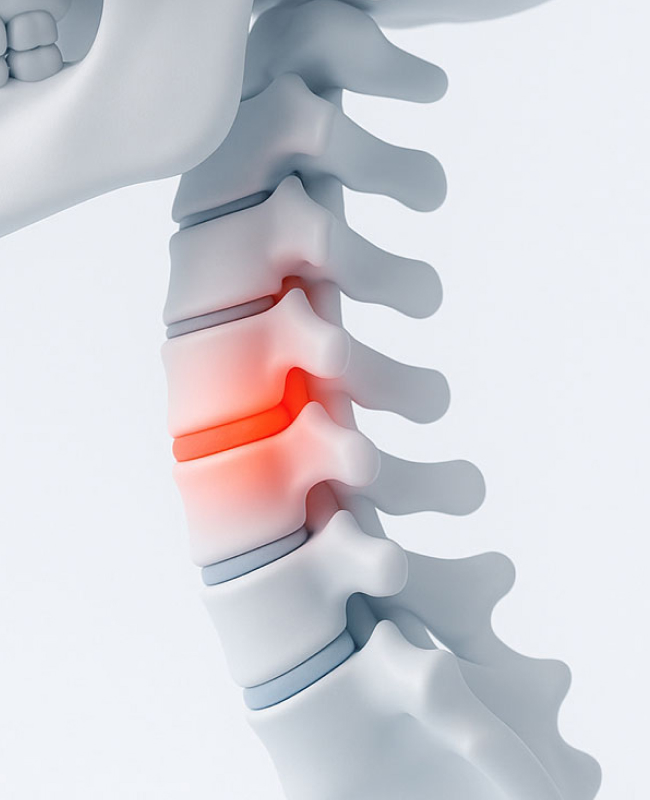
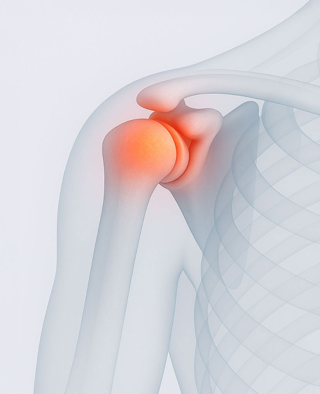
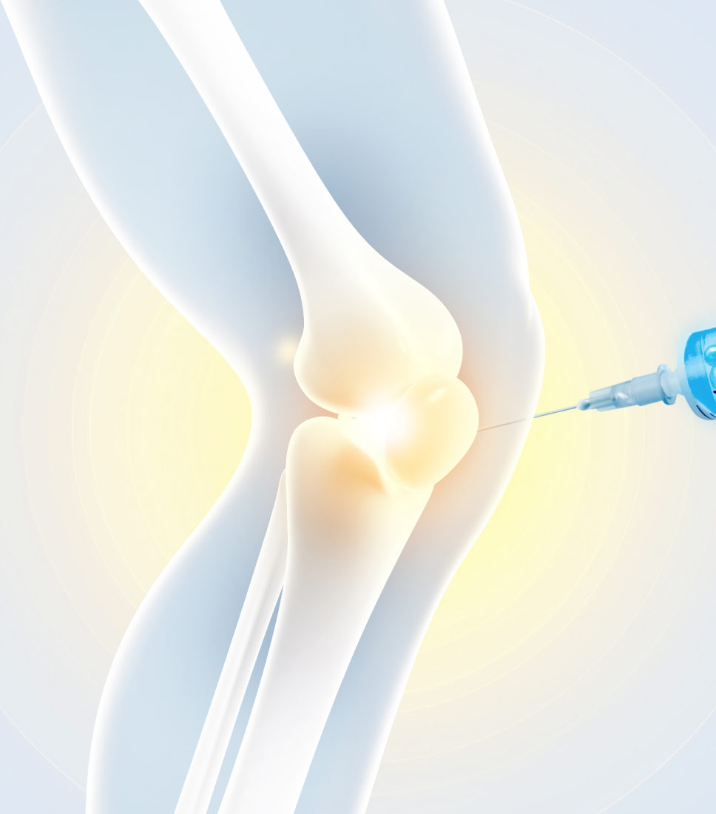
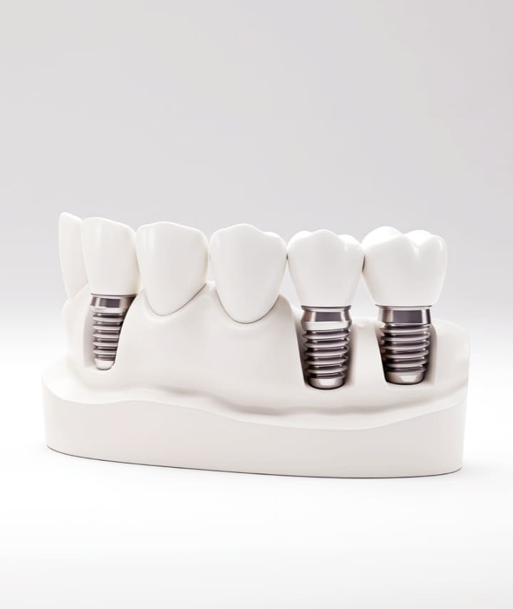

STEP 1
수술 전,
문제점이 보입니다.
3D CT로 신경·혈관·잇몸뼈를 입체로 확인합니다.
환자도 모니터로 함께 봅니다.
감각이 아닌, 측정으로 심는 임플란트.
김성재 대표원장이 초진부터 수술까지 직접 진료합니다.
저희는 3D CT로 잇몸뼈·신경·혈관을 입체로 보여드리고,
시뮬레이션으로 시술을 시작합니다. 디지털은 저희에게, 환자와 함께 보는 도구입니다.
환자와 함께 모니터로 직접 확인
시술 시뮬레이션 사전 공유
본을 뜨고 치료받기까지 10일 이상 걸리던 과정이, 이제는 하루 안에 가능합니다.
3D CT로 신경·혈관·잇몸뼈를 입체로 확인합니다.
환자도 모니터로 함께 봅니다.
디지털 시뮬레이션으로 식립 위치·각도·깊이를 사전에 결정. 가이드 장착으로 오차 0.1mm 단위.
본을 뜨는 10일이 디지털 스캔으로 1일. 최소 절개로 회복도 빠릅니다.
10년 한자리, 10,000건 누적의 시간이 만든 바른마음 디지털 임플란트의 네 가지 약속입니다.
0.2mm 단위 입체 영상
신경관·상악동 거리 자동 계산
환자에게 모니터로 직접 설명

식립 위치·각도·깊이 사전 시뮬레이션
환자 맞춤 수술 가이드 장착
김성재 원장 10,000건 누적 데이터 기반

VOD도포 마취 → 단계적 마취
잇몸 무절개·최소절개 방식
마취제 양·속도·압력 조절
출혈·붓기 최소화
13,000명 이상 시술 검증
다음 날 일상 복귀 가능

임플란트 본체 10년 보증서 발급
보철물 5년 보증 (마모·파손 시 재제작)
정기 검진 시 무료 점검
3D CT 촬영, 시뮬레이션,
맞춤 가이드 제작까지
무통마취와 최소절개로 진행합니다 (30분~1시간)
디지털 스캔 후 크라운을
장착합니다
보철 장착 후 보증서와
정기 검진으로 관리합니다
10년 이상 누적된 임상 데이터로 검증된 국내 1위 정품 임플란트,
성공률 99.3% (분당 서울대 실험)
지대주와 본체를 일체화한 차세대 정품 임플란트,
미세 흔들림과 간극을 차단해 장기 안정성을 높입니다.
본체 10년·보철 5년 보증과 평생 무료 정기 검진까지,
시술 그 이후의 시간을 함께 책임지는 약속입니다.

매일 스스로에게 묻는 질문에서, 바른마음의 진료가 시작됐습니다.
감각과 경험만 믿고 식립하는 시대는 지났습니다.
환자에게 더 정확하고, 덜 아프고, 빨리 회복하는 방법이 있다면,
그 방향으로 가는 것이 의사의 책임입니다.
보이지 않는 부분까지 측정하는,
디지털 임플란트의 핵심 장비입니다.

신경·혈관·잇몸뼈를 입체로 진단합니다.
방사선량은 일반 CT의 10% 수준입니다.
본을 뜨는 불편함 없이 5분 만에 인상을 채득합니다.
구토감 없이 정확한 디지털 데이터를 확보합니다.
환자 잇몸뼈 형태에 맞춘 수술 가이드를 제작합니다.
식립 위치·각도·깊이를 0.1mm 단위로 구현합니다.
마취제의 양·속도·압력을 자동으로 조절합니다.
일정한 압력으로 통증을 최소화합니다.
아래 항목 중 하나라도 해당하시면,
디지털 임플란트 방식이 안전합니다.
한 번에 여러 개의 임플란트를 식립해야 해서 정확한 위치 설계가 더욱 중요한 분
출혈·붓기 등 수술 부담을 줄이고 회복 기간을 단축해 빠르게 일상에 복귀하고 싶은 분
잇몸 절개 자체가 두려워 무절개·최소절개 방식으로 부담 없이 진행하고 싶은 분
당뇨·고혈압 등 전신질환을 앓고 계셔서 수술 시간을 최대한 단축할 필요가 있으신 분
잇몸뼈가 부족하거나 신경·혈관 위치가 까다로워 정밀한 사전 진단이 반드시 필요한 분
통증에 예민하거나 치과 자체에 두려움이 커서 무통 마취 시술을 선호하시는 분
통증·비용·보험·재수술까지
임플란트 결정 전에 가장 많이 듣는 질문입니다.
임플란트 수술, 아프진 않을까요?
기존 임플란트 수술은 잇몸 절개로 인해 출혈이나 붓기 등이 많이 생겨 통증이 발생했습니다.
하지만 컴퓨터분석 임플란트는 잇몸을 최소한만 절개하기 때문에 출혈이나 붓기가 적어
자연스럽게 통증도 적고 수술 후 회복 기간도 빠른 편입니다.
수술 시간이 얼마나 걸리나요?
누구나 디지털 임플란트가 가능한가요?
임플란트 비용이 많이 비싸지 않을까요?
다른 곳에서 실패한 임플란트도 가능한가요?